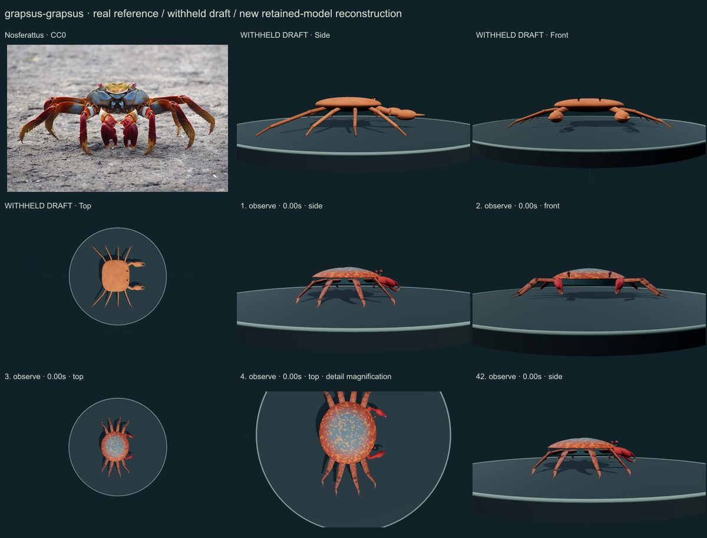
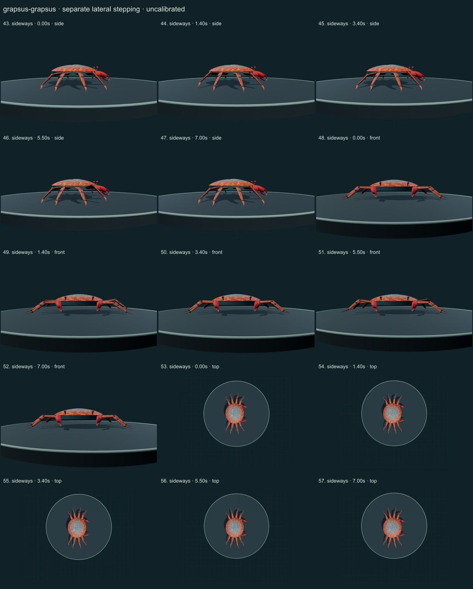
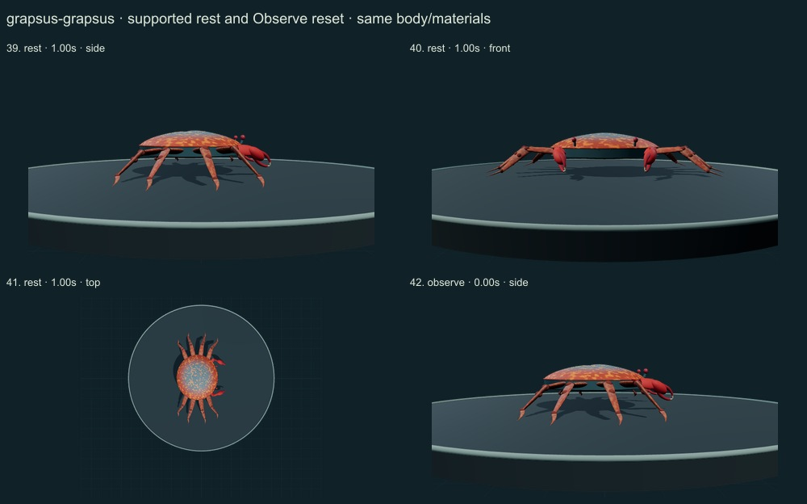
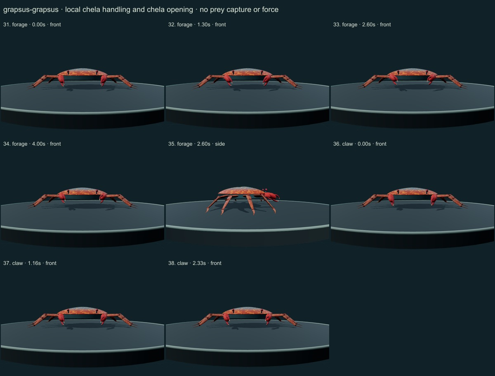
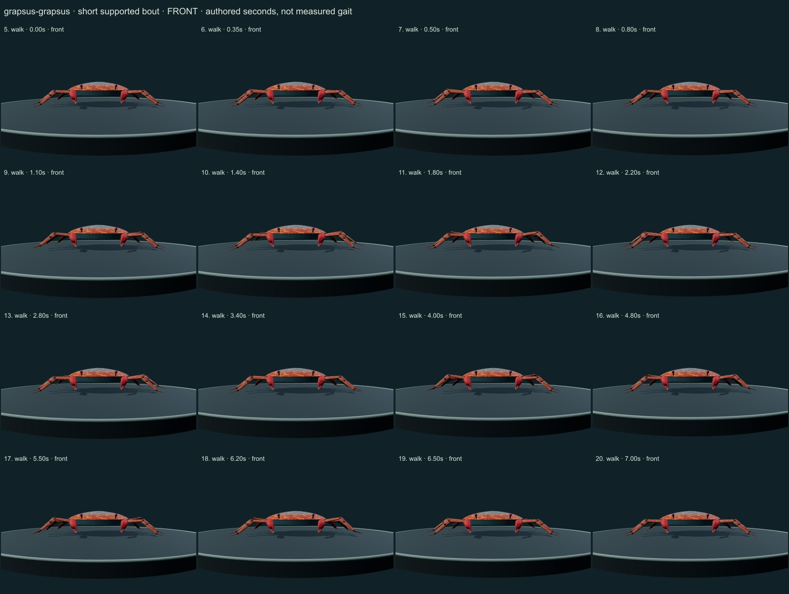
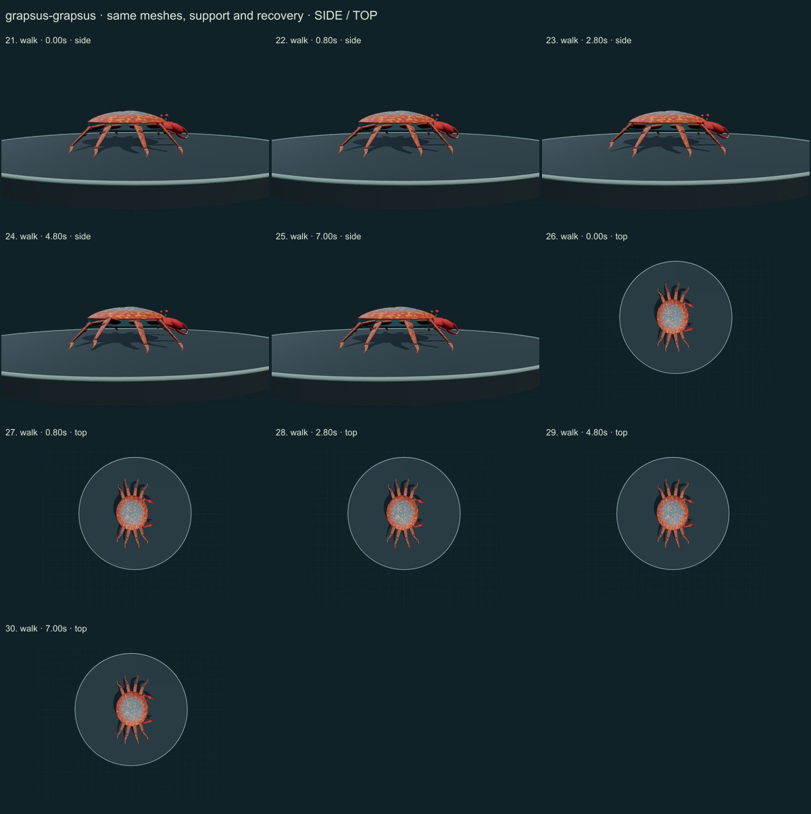

PhenoVoxel Archive · v0.6.19 · October 24, 2026
Sally lightfoot crab · individual initial correction
This five-species release reaches 262 after verified publication. 38 saved drafts remain withheld; 288 species remain to 550, including 250 without saved drafts. Release register. Fine anatomy and biological dynamics remain partial, unmeasured and independently unvalidated.
Actual scanned Kramer1966 pages18–20 were rendered/read. Slow forward/oblique walking is distinguished from rapid lateral travel; the separate lateral study is not a measured running gait. The Galapagos Conservation Trust account and Nosferattus CC0 photograph were compared. The historical subspecies proposal is not adopted as an accession.
Nosferattus · CC0. Nosferattus source labels a Galapagos individual. Sex and precise age are unverified. The selected visible red/blue/ochre phenotype does not represent juvenile or regional color variation. Resized inside 1000 px, flattened and JPEG encoded; no generative alteration.
Exact source/license/download/local checksums remain in the data. Photograph identity and capture conditions are not independently re-established. Generated photographs are not used.
A lower rounded shell, thicker continuous sidewall, widely separated short eye stalks, eight broad flattened articulated walking legs, shorter dark joint caps and paired red chelae with pale distal tips replace the oval and rod-limbed draft.
Selected red marginal, blue central and ochre pigment fields, fine cuticle relief, distal setae and red chelae are original numerical approximations guided by the authentic Galapagos photograph.
Remaining: The regional shell outline, frontal lobes, orbital sockets, flattened limb cross sections and fine mouthparts are incomplete or unmeasured. Front carriage still differs from the selected photo. Pigment placement remains illustrative, with no sex/age determination, measured optics or full natural variation.
Short authored forward support bout, separate lateral bout, local chela handling/opening and quiet support remain on the same meshes. No implemented swimming, empty-chela ingestion mechanism or calibrated running.
No measured coordinates, natural playback rate, joint limits, forces, fluid dynamics, muscle, food contact, ingestion, sensory physiology or independent biological validation. Fixed-length/support checks establish internal software consistency only.
57 actual final nonblank side/front/top, enlarged and action/posture states inspected individually on labelled sheets against the authentic photograph and scoped sources. Superseded frames excluded. Qualitative author assessment, not independent expert certification.






No 90% accuracy score, measured biological rate, physiological simulation or independent specialist certification is asserted. Software checks are not empirical validation. The prior 257 species objects and credited wolf/tiger behavior meshes are unchanged. Original geometry/material/controller code is MIT; real reference photos retain their individual licenses. Primary-paper figures were consulted where accessible and linked, not redistributed. Modern taxonomy is retained; Protista/Monera are legacy reporting conveniences and recorded occurrences are not native-range boundaries.
Per-frame findings, source scopes and checksums · Live model